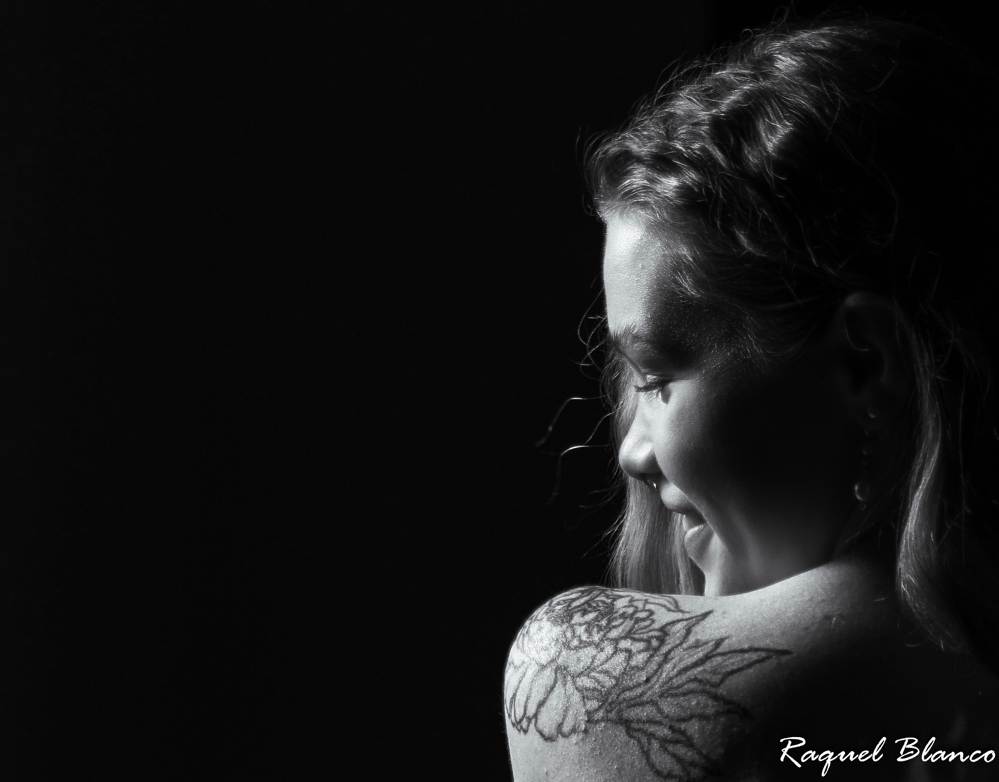
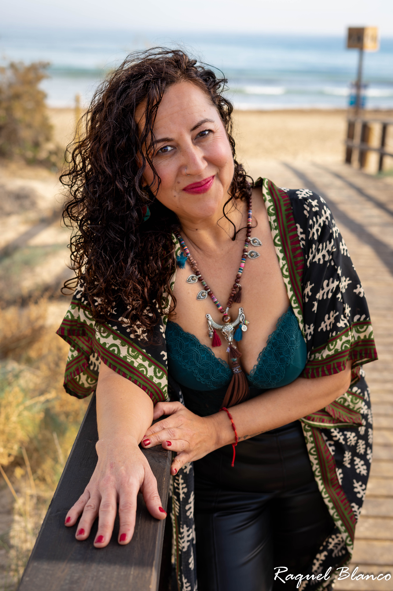
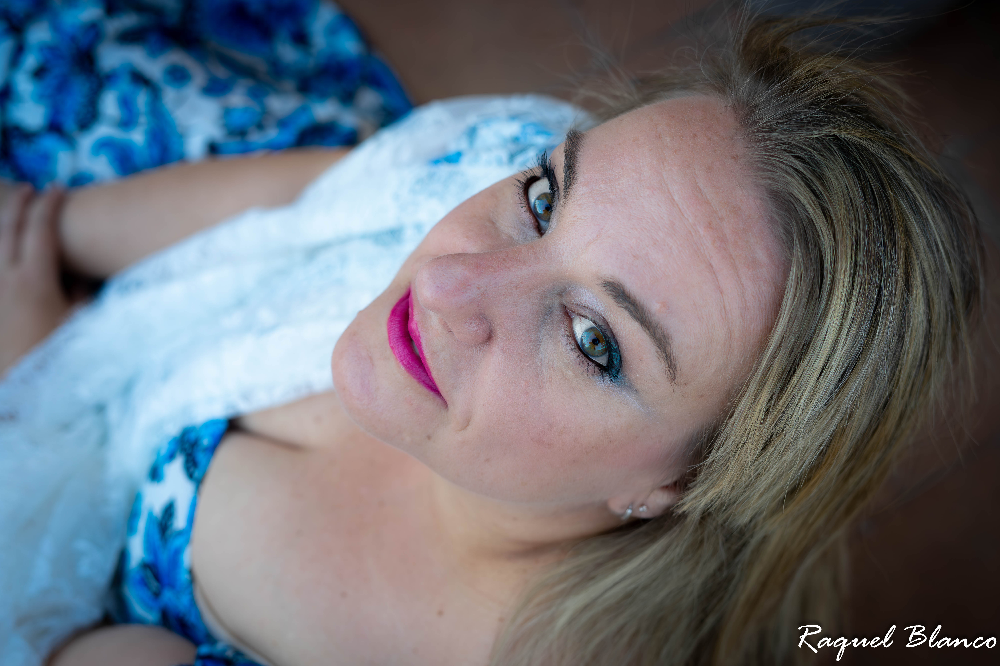
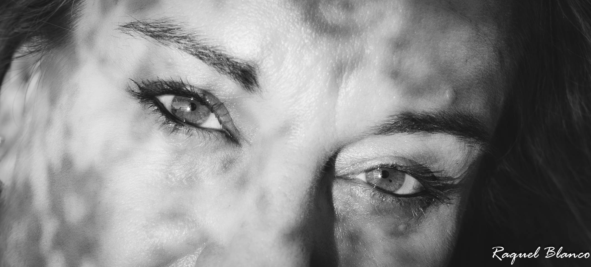

Un espacio íntimo, elegante y verdadero para verte con dignidad y calma.
Sesiones íntimas, profundas y minimalistas donde no vienes a posar: vienes a aparecer. Un lugar donde la identidad se afloja y surge algo más verdadero.




Una experiencia para quienes sienten que están entre vidas. Un rito suave, un tránsito, una apertura.
Descubrir El Umbral →“Pensé que venía a hacerme fotos. Me fui viéndome por primera vez.”
“No fue una sesión, fue un antes y un después.”
Si algo en ti se movió, escríbeme. No hace falta que tengas todo claro.